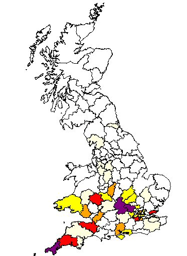
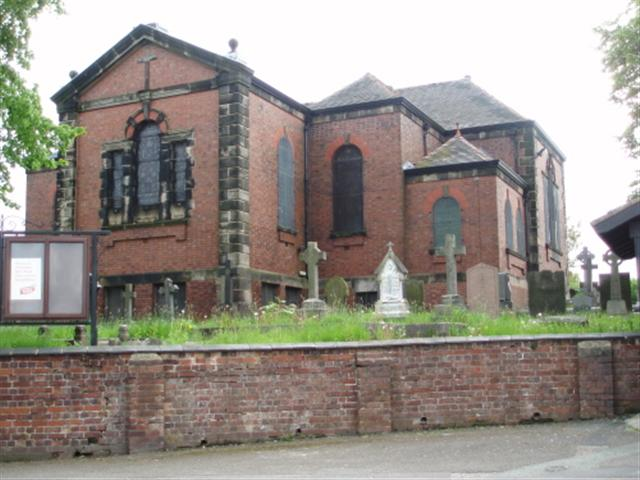

Our Floyd's appear to originate from Staffordshire where Abraham Floyd married Ann Taylor at Norton in the Moors, Staffordshire in July 1797 (Possibly Abraham Lloyd - bapt 24 May 1778 Burslem, Stafford). They have two children that we know about. Nathan was born in Staffordshire in 1802, whilst six years later his brother Emmanuel was born in Liverpool.

Nathan meets and marries Margaret and in 1841 he appears in Nash Grove, Liverpool with his wife and their three children. Sadly our direct ancestor and Nathan's daughter, Maria Floyd was not living with them at this time. Her two year old sister Harriet, does appear however and this enables us to identify the family as Harriet appears again, living with Maria in 1851. We know very little about Maria, and have been unable to find a record of her birth. There is a Mary Floyd living with Elizabeth King in Grenville Place, Nelson Street, Liverpool in 1841, however there is nothing definite to identify her as our Maria.
Maria first appears in formal records as Maria Marsh, the wife of Daniel Marsh , when she gives birth to their first child, Alfred, in Chorlton upon Medlock, Manchester in February 1847. However no marriage record has been found and it is thought that Daniel, who was aged in his mid to late 50's, had left a previous wife in Liverpool. This theory has still to be confirmed.
Current Research : Research required in Liverpool to trace the birth of Maria to confirm the link to Nathan Marsh. Also further investigation of a possible marriage between Maria and Daniel Marsh.
Click here for full details of our Floyd ancestry
July 14, 2011
Floyd
Surname Origin: English variant of the Welsh 'Lloyd' meaning "grey and hairy". The English found it difficult to pronounce the Welsh "Ll" sound and interpreted it as "Fl".
Our Floyd's appear to originate from Staffordshire where Abraham Floyd married Ann Taylor at Norton in the Moors, Staffordshire in July 1797 (Possibly Abraham Lloyd - bapt 24 May 1778 Burslem, Stafford). They have two children that we know about. Nathan was born in Staffordshire in 1802, whilst six years later his brother Emmanuel was born in Liverpool.
Nathan meets and marries Margaret and in 1841 he appears in Nash Grove, Liverpool with his wife and their three children. Sadly our direct ancestor and Nathan's daughter, Maria Floyd was not living with them at this time. Her two year old sister Harriet, does appear however and this enables us to identify the family as Harriet appears again, living with Maria in 1851. We know very little about Maria, and have been unable to find a record of her birth. There is a Mary Floyd living with Elizabeth King in Grenville Place, Nelson Street, Liverpool in 1841, however there is nothing definite to identify her as our Maria.
Maria first appears in formal records as Maria Marsh, the wife of Daniel Marsh , when she gives birth to their first child, Alfred, in Chorlton upon Medlock, Manchester in February 1847. However no marriage record has been found and it is thought that Daniel, who was aged in his mid to late 50's, had left a previous wife in Liverpool. This theory has still to be confirmed.
Current Research : Research required in Liverpool to trace the birth of Maria to confirm the link to Nathan Marsh. Also further investigation of a possible marriage between Maria and Daniel Marsh.
Click here for full details of our Floyd ancestry
July 14, 2011